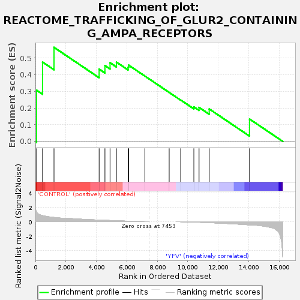
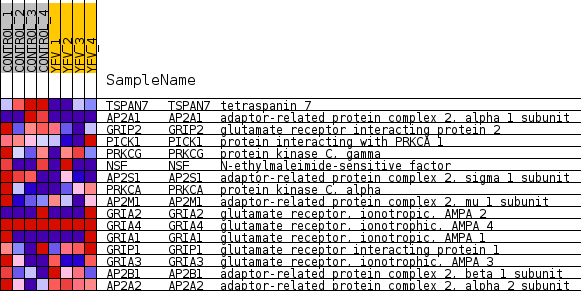
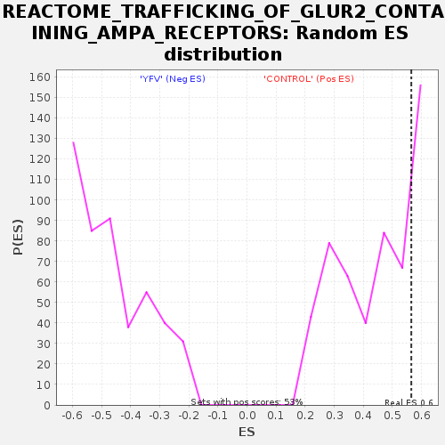

| Dataset | MATRIZ_GSE99081_collapsed_to_symbols.gsea_CLASE_99081.cls#CONTROL_versus_YFV |
| Phenotype | gsea_CLASE_99081.cls#CONTROL_versus_YFV |
| Upregulated in class | CONTROL |
| GeneSet | REACTOME_TRAFFICKING_OF_GLUR2_CONTAINING_AMPA_RECEPTORS |
| Enrichment Score (ES) | 0.5648399 |
| Normalized Enrichment Score (NES) | 1.2646484 |
| Nominal p-value | 0.2932331 |
| FDR q-value | 0.94898605 |
| FWER p-Value | 1.0 |

| SYMBOL | TITLE | RANK IN GENE LIST | RANK METRIC SCORE | RUNNING ES | CORE ENRICHMENT | |
|---|---|---|---|---|---|---|
| 1 | TSPAN7 | tetraspanin 7 | 78 | 1.372 | 0.3075 | Yes |
| 2 | AP2A1 | adaptor-related protein complex 2, alpha 1 subunit | 469 | 0.848 | 0.4767 | Yes |
| 3 | GRIP2 | glutamate receptor interacting protein 2 | 1221 | 0.591 | 0.5648 | Yes |
| 4 | PICK1 | protein interacting with PRKCA 1 | 4183 | 0.228 | 0.4343 | No |
| 5 | PRKCG | protein kinase C, gamma | 4564 | 0.195 | 0.4554 | No |
| 6 | NSF | N-ethylmaleimide-sensitive factor | 4899 | 0.166 | 0.4726 | No |
| 7 | AP2S1 | adaptor-related protein complex 2, sigma 1 subunit | 5316 | 0.129 | 0.4763 | No |
| 8 | PRKCA | protein kinase C, alpha | 6084 | 0.069 | 0.4448 | No |
| 9 | AP2M1 | adaptor-related protein complex 2, mu 1 subunit | 6117 | 0.067 | 0.4581 | No |
| 10 | GRIA2 | glutamate receptor, ionotropic, AMPA 2 | 7187 | 0.001 | 0.3924 | No |
| 11 | GRIA4 | glutamate receptor, ionotrophic, AMPA 4 | 8780 | 0.000 | 0.2942 | No |
| 12 | GRIA1 | glutamate receptor, ionotropic, AMPA 1 | 9537 | -0.005 | 0.2488 | No |
| 13 | GRIP1 | glutamate receptor interacting protein 1 | 10399 | -0.051 | 0.2073 | No |
| 14 | GRIA3 | glutamate receptor, ionotrophic, AMPA 3 | 10741 | -0.079 | 0.2043 | No |
| 15 | AP2B1 | adaptor-related protein complex 2, beta 1 subunit | 11407 | -0.140 | 0.1951 | No |
| 16 | AP2A2 | adaptor-related protein complex 2, alpha 2 subunit | 14053 | -0.451 | 0.1347 | No |

